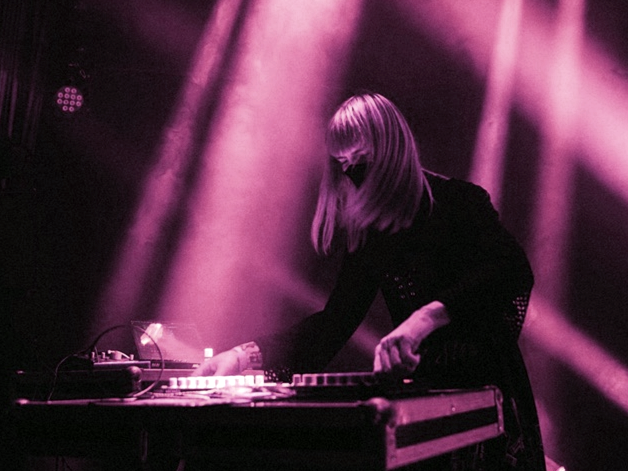
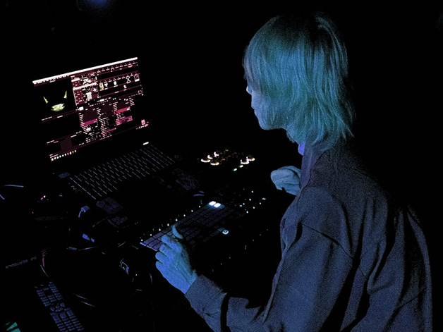
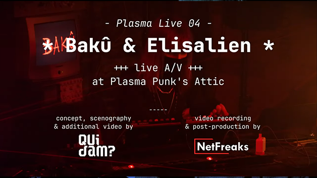
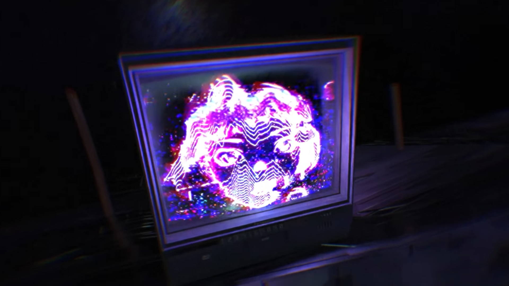
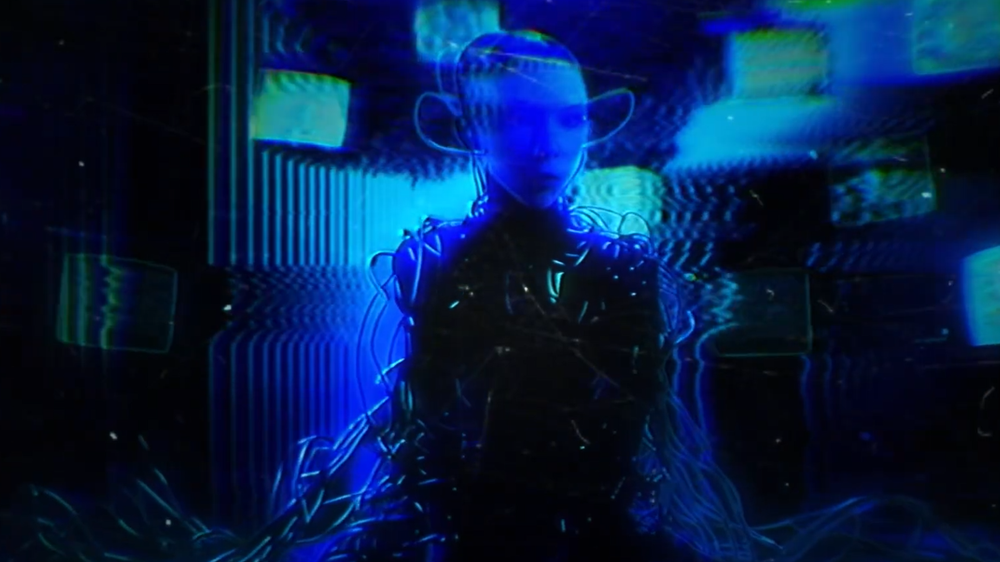
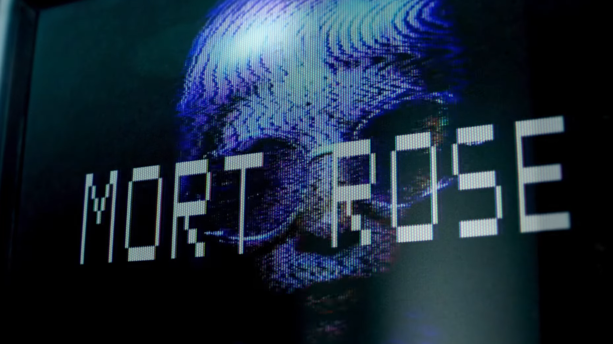

Un live audiovisuel évolutif au rythme des sets, festivals, ambiances… Bakû surprend toujours dans sa sélection, mêlant ses propres productions avec des musiques de producteur·ices qui nourrissent son univers. Également artiste visuelle, Bakû a développé en collaboration avec Elisalien un show A/V mêlant leurs influences communes : la culture anime, cyberpunk, science-fiction…
Depuis 2020, Elisalien et Bakû font se rencontrer leurs pratiques musicales et visuelles dans un live A/V, à la croisée du concert et de l’expérience sensorielle.
Le projet Phase(s) explore des thèmes autour des avatars et de l’introspection. À l’aide de dessins, d’animations, et de l’intégration de la captation live aux visuels, l’univers intime de Bakû est présenté par ces différentes versions d’elle-même, de la 2D à la 3D.
La musique, qui se veut plus expérimentale que sur les précédents projets de Bakû, est profonde et ambiante. Explorer les possibilités techniques auditives et scénographiques les plus immersives est un des objectifs principaux de ce projet — envelopper le spectateur dans cet univers, le mettre au plus près de la création et de l’enveloppe sonore et visuelle.

Artiste-productrice explorant une musique électronique sombre, sensorielle et insaisissable. À la croisée de multiples influences, elle refuse les étiquettes et trace une voie singulière entre basses profondes, rythmiques en tension et textures éthérées. Sa musique, entre rêve et dystopie, plonge l'auditeur dans un voyage hypnotique où l'intensité brute côtoie la fragilité des émotions.
Fondatrice de 8raw, label indépendant français dédié aux sons bruts et aux expériences audiovisuelles singulières. Entre musique électronique, dub et expérimentation, 8raw porte une vision radicale de la création sonore où chaque sortie est pensée comme un objet artistique à part entière.

Artiste numérique et technicienne vidéo aux multiples casquettes, Elisalien navigue entre création et technique au service du spectacle vivant. Active dans le concert, le théâtre et la performance A/V, elle utilise de nombreuses techniques allant du traditionnel au numérique. Membre du Collectif Neon Live, elle collabore avec Bakû depuis 2020 en live A/V et réalisation de clips vidéo.




MORT ROSE — 3e place aux Chroma Awards, catégorie clip musical expérimental.
Nouvel EP de Bakû en cours de production — sortie prévue 2026.
Lauréat·es Éclats d'AURA — résidence de création A/V au LabLab (AADN), sept. 2026.
Une note argumentée présentant la pertinence de notre accueil au sein du Château Éphémère et les axes de travail spécifiques que nous souhaitons développer lors de la résidence.
Phase(s), c’est un peu l’évolution naturelle de tout ce que nous avons expérimenté jusqu’ici. On garde le même univers, mais on le fait sortir d’un simple eye candy accompagnant un DJ Set explosif. Souhaitant proposer quelque chose de plus proche de nos envies créatives, moins formaté par les attentes d’un public surexcité, Phase(s) est une parenthèse, une histoire à part que l’on cherche à raconter.
Fortes de plusieurs expériences, d’improvisations et de débrouillardise, on aimerait maintenant pouvoir prendre le temps de construire quelque chose de précis. Et pour cela, on a besoin d’un regard extérieur, plus expert et plus technique. L’accompagnement d’un régisseur technique pendant la résidence serait une ressource directe et rare que nous peinons à trouver ailleurs.
Ce qu’on cherche aussi, c’est un cadre qui pense le live autrement que le concert ou le DJ set. Phase(s) se destine davantage à la performance musicale orientée arts numériques, et Château Éphémère semble comprendre cette distinction.
On est sensibles à la mentalité du lieu : son rapport au numérique comme matière artistique à part entière, et son ouverture aux projets portés par des personnes FLINTA. Nous sommes deux personnes qui ont trouvé dans les ordinateurs et les propositions alternatives un espace de création qui leur ressemble. Château Éphémère a l’air d’être construit sur une logique similaire.
Depuis 2020, Elisalien et Bakû font se rencontrer leurs pratiques musicales et visuelles dans un live A/V, à la croisée du concert et de l’expérience sensorielle.
Notre projet Phase(s) explore des thèmes autour des avatars et de l’introspection. À l’aide de dessins, d’animations, et de l’intégration de la captation live aux visuels, l’univers intime de Bakû est présenté par ces différentes versions d’elle-même, de la 2D à la 3D.
La musique, qui se veut plus expérimentale que sur les précédents projets de Bakû, est profonde et ambiante. Explorer les possibilités techniques auditives et scénographiques les plus enveloppantes est un des objectifs principaux de ce projet : on veut pouvoir faire entrer le spectateur dans cet univers, le mettre au plus près de la création, de l’enveloppe sonore et visuelle.
Comment le numérique, la création, influent notre vision de nous-mêmes ? Bakû est à la fois modèle et artiste, autrice et sujet. Sa vision d’elle-même fluctue au rythme des questions autour du cynisme de notre époque, de la transidentité, la recherche de plénitude…
En septembre 2026, nous débutons une résidence au LabLab (AADN), un espace également équipé pour la projection sur grand format. Nous y entamerons un travail sur l’intégration de la captation live aux visuels, l’exploration d’outils de motion capture, et la communication son/vidéo via OSC. La résidence au Château Éphémère s’inscrirait dans la continuité directe de ce chantier.
Une restitution publique est envisageable à la fin de la période de résidence ou pour une date ultérieure.
Le duo Bakû / Elisalien dispose d’un corpus solide : plusieurs dates de live A/V (Scararoots, Vizara Festival, Alive Dub Festival, Le Ferraïlleur Nantes…), une trilogie de clips vidéo dont MORT ROSE (3e prix Chroma Awards, catégorie clip expérimental), et une résidence obtenue à l’AADN Éclats d’Aura (LabLab, septembre 2026). Le projet est porté par le label ODG Prod et accompagné par la structure de booking et management aftrwrk.
MORT ROSE 3e place aux Chroma Awards, catégorie clip musical expérimental.
Lauréat·es Éclats d’AURA résidence de création A/V au LabLab (AADN), sept. 2026.
ODG Prod (label) • aftrwrk (booking & management) • Collectif Neon Live
Clip tourné lors d’une résidence de création avec le dispositif Echo :